Included new menu pages and extended the options menu to allow the player to control the volume of the game music.
Following a short video to demonstrate the menu structure and the playing background sound.
To ensure that the menu windows always have the same starting position, we pass the positions of the currently displayed menu window to the upcoming window.
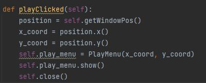
Including background sound
We work with a config file to save changes made in the options menu.
Changing values in the options menu will overwrite the entries in the config file.
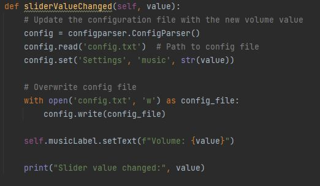
It ensures that changes made will remain even if you quit and restart the game.
Currently our only entries are regarding the game sound.
A possible stretch goal could be to provide players with the ability to modify the game controls through the options menu and save the changes in the config file.
To play the music we implemented a class MusicPlayer:
With following functions:
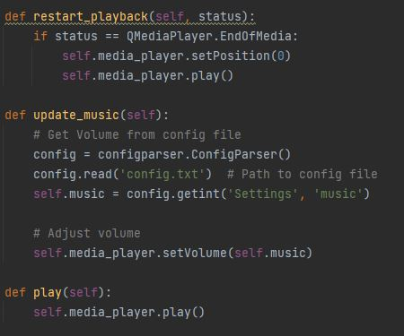
Restart_playback causes the music to run in a loop.
The update_music function is called every 500 milliseconds and adjusts the volume of the music based on the value specified in the config file.
Difficulties
Actually Finding an implementation where the music is played independently by the actions of the player in the main menu.
In previous versions the music didnt loop or got restarted every time a window(menu) is switched.
Among others we tried to use threads to play the music which didnt end up working.
Improving Map Editor and including it in the menu structure
Remade the UI of the mapeditor with qtdesigner.
Put the buttons in an non-drawable area to the right. Beforehand they were in the midst of the screen
Implemented load function to convert an already saved txt.file back to a drawn arena.
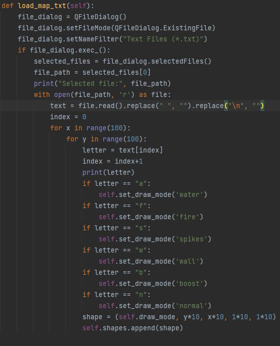
Video that showcases the load function and the new UI of the MapEditor:
Problem:
Circular dependency between the Menus.py and MapEditor.py file. Solved with following code line:
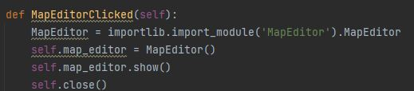
MapEditor only gets imported, when we actually switch to the MapEditor window.
Adding Health and Weapons (Marcel John)
added maxHealth and health as ints
added function to heal and deal demage
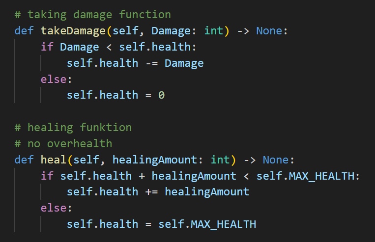
Weapons are objects we use enums to differentiate
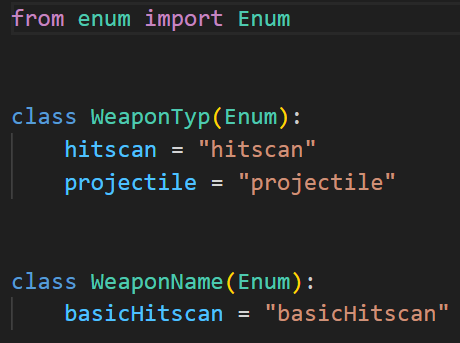
The Weapon stores the attributes
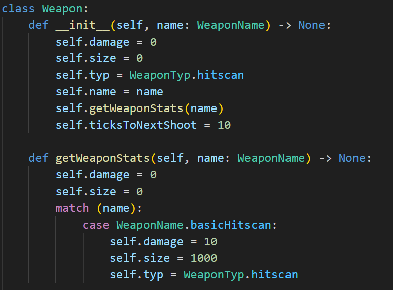
The inputHandler shoots the Weapon, also added a delay between shoots
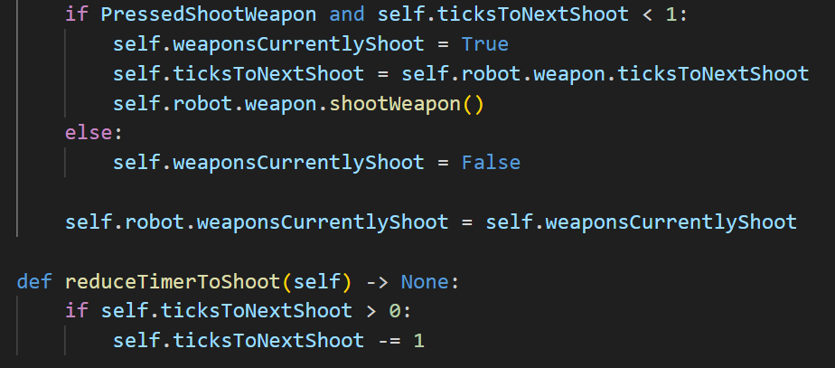
For the drawing added helper functions to calculate the position of the health bar and the end point of the shoot
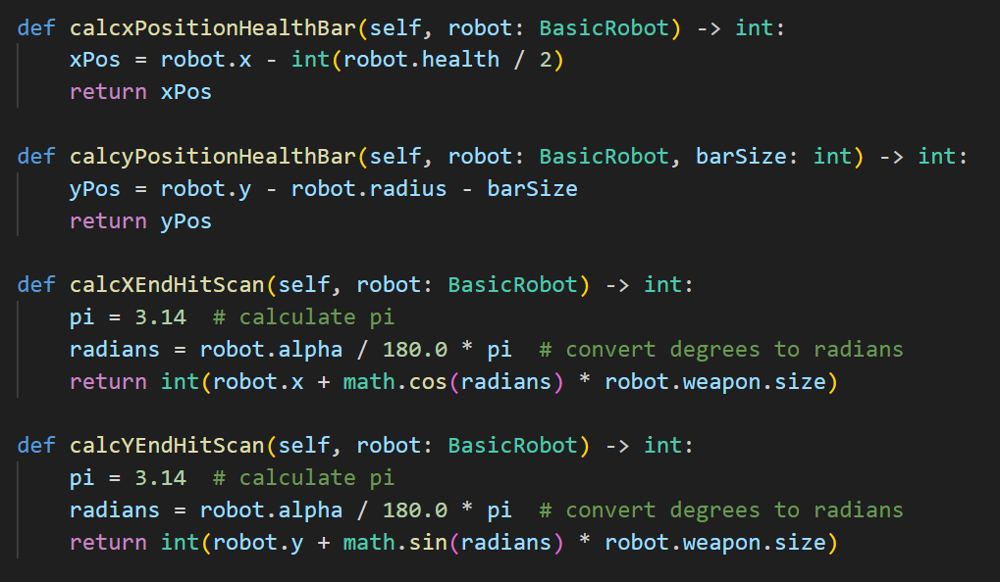
Drawing the healthbar and shoot
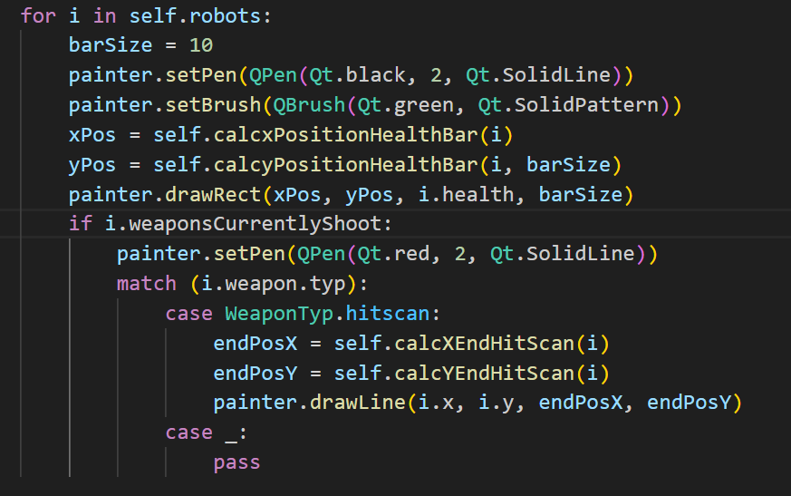
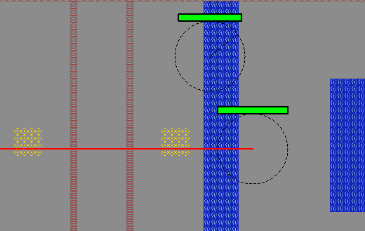
To calculate if we hit we use vector Math
we treat our shot as a line a vector ab and the robot we are checking
to ac from end shot to center of robot we calculate the length. Using the length we normalize the vector ab
to get the direction. We get the distance using the dotproduct of the normalazied vector and ac.
The distace on line function enshures the closest point is on the line.
Now we make the Projection vector using distance and the direction.
Using this vector we can find the closest point on the line to our circle.
Now we only need to cheeck if the closest point is closer than the raidius than we apply the damage.
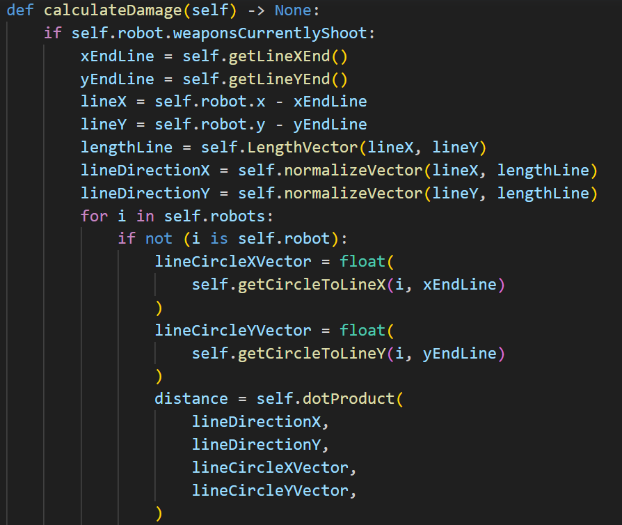
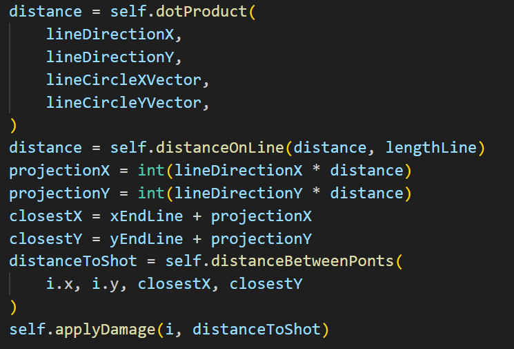
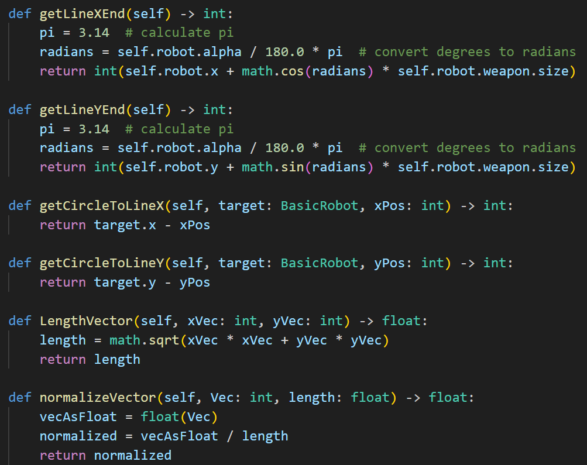
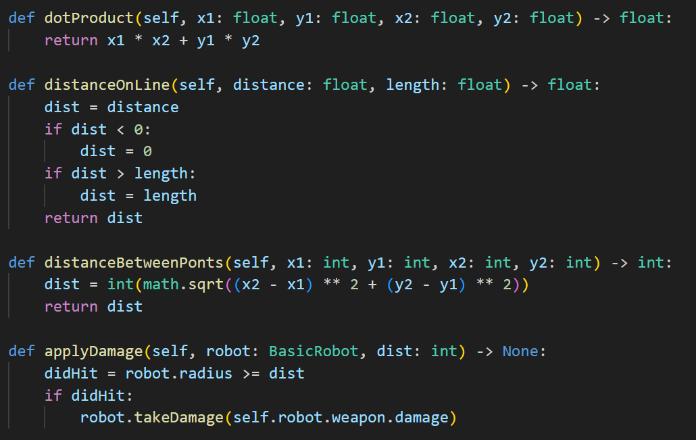
Adding Robot to Robot Collision detection (Tom)
Since we don't want our robots to be able to drive through each other we extended our previous collision detection function to also take other robots into account.
We do this by giving each robot an array which conatins all other robots currently alive in the arena.
And then iterating over all other robots to check if we are intersecting with any of them. Since all of our robots will be of circular shape this is quite inexpensive.
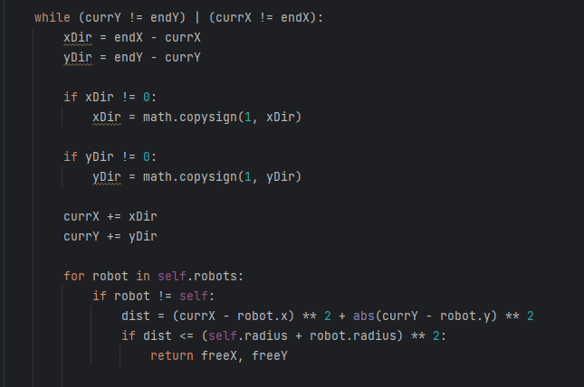
Adding Tile Logic to our Game (Tom)
In our Game we have differnet kinds of Terrain, such as Fire, Water, Spikes and more. Each of these should have a specific effect on the players whenever they drive over them.
At first our robots were much bigger than our Tiles, meaning at any point the robot would be on multiple tiles at a time, so we opted to apply every effect of every Tile the Robot was currently on.
This was a bad Idea since its very hard to see which tiles you are actually on and the sum of all the effects can be quite overwhelming and even cancel eachother out, leading to very confusing behaviour.
We have since adjusted our Robots to be much smaller than the tiles, now we only ever apply the effect of one Tile!
Size of a Robot next to a Tile:
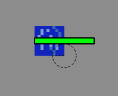
This had the nice side effects of making our collision detection faster since there are less tiles to check for collision and our reading of the Arena Text file has also gotten faster since it is smaller now.
How we apply effects of each Tile type currently:
The Move multiplier as seen above is then multiplied with our speed in the move function, resulting in slower or faster movement.